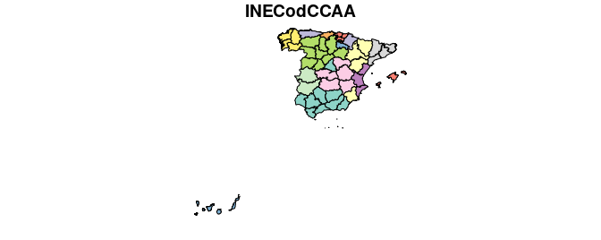
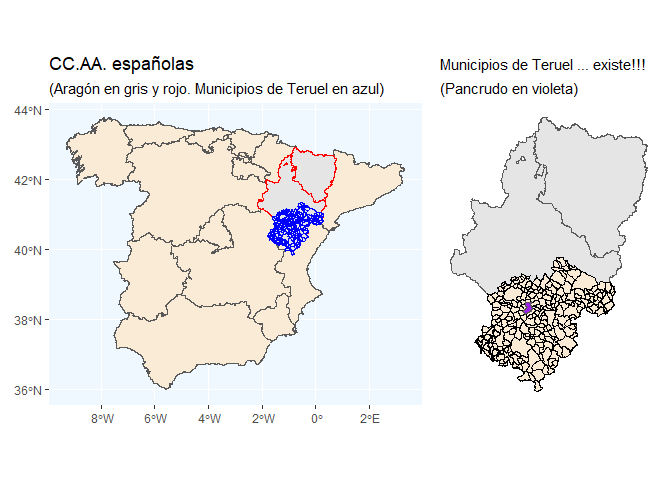

El objetivo de este repo es facilitar la realización de mapas a nivel municipal para España. Para ello se ofrecen las geometrías o contornos municipales españoles para los años 2002 a 2020. ¿Es necesaria esta información? Evidentemente pensamos que sí. En España el encargado de ofrecer está información es el Instituto Geográfico Nacional (IGN), PERO el IGN no guarda un registro históricos de las lineas límites municipales. Solo ofrece la información más actual. Por lo tanto, si se quisiera representar gráficamente, por ejemplo, la población municipal en el año 2010, ocurriría que los contornos ofrecidos por el IGN no cuadrarían con la información estadística del INE referida a 2010. La razón es que la relación de municipios puede cambiar con el tiempo; por ejemplo, en el año 2018 se crearon en España 7 nuevos municipios, entre ellos El Palmar de Troya, que surge como una segregación de Utrera.
La página web del paquete LAU2boundaries4spain puede visitarse aquí.
Como el objetivo último de este repositorio es facilitar la representación gráfica de información estadística a nivel municipal, se facilitan los contornos de los términos municipales españoles ajustados a los municipios existentes a 1 de enero de cada año desde 2002, de forma que cuadren exactamente con el Padrón de dicho año. Los contornos a fecha de 1 de enero de 2002 son consistentes con los existentes en el censo de 2001, con fecha de referencia 1 de noviembre de dicho año.
Creemos que dicha base de datos es útil por varias razones. El Instituto Geográfico Nacional (IGN) ofrece, a través del Centro de Descargas del Centro Nacional de Información Geográfica, los recintos municipales –también los provinciales y autonómicos– dentro de la Base de Datos de Líneas de Límite Municipal en la Información Geográfica de Referencia, sin embargo estas bases de datos son de actualización continua, de forma que lo que se dispone son los municipios “en el momento actual”, y no existe un histórico que puede ser de utilidad por muchas razones. Así pues, hasta donde nosotros conocemos, no se dispone, por ejemplo, de una capa vectorial de los polígonos municipales del año 2006, o de la de los municipios correspondientes al censo de 2001. Esta información es necesaria si queremos combinar la información geográfica con la información estadística municipal histórica procedente, por ejemplo, del Instituto Nacional de Estadística (INE).
Este repositorio pretende cubrir esa laguna que, de momento, no ha sido satisfecha por las instituciones oficiales. El repositorio está disponible como un package de R alojado en Github: https://github.com/perezp44/LAU2boundaries4spain. La información ofrecida ha ido elaborándose durante bastante tiempo a partir de diversos trabajos (Goerlich, Mas, Azagra y Chorén 2006, 2007; Goerlich, Ruiz, Chorén y Albert 2015; Reig, Goerlich y Cantarino 2016).
Información más detallada del proceso seguido para la construcción de los diferentes ficheros de lindes puede encontrase en una de las vignettes del package, concretamente aquí
Datos
El paquete proporciona:
- un fichero con los lindes de las CC.AA (
CCAA) - un fichero con los lindes provinciales (
Provincias) - un fichero con los lindes municipales para cada año del periodo 2002-2020 (por ejemplo
municipios_2020)
Los ficheros se ofrecen en formato spatial-df del paquete sf
Algunos ejemplos de uso
- Un gráfico simple con el método por defecto del paquete
sf:
library(sf)
#> Linking to GEOS 3.6.2, GDAL 2.2.3, PROJ 4.9.3
Provincias <- Provincias
plot(Provincias, max.plot = 1)
- Municipios de Teruel en 2017
library(LAU2boundaries4spain)
library(tidyverse)
library(sf)
library(patchwork)
CCAA_peninsular <- CCAA %>% filter(!NombreCCAA %in% c("Canarias", "Illes Balears", "Ciudades Autónomas de Ceuta y Melilla"))
Prov_aragon <- Provincias %>% filter(NombreCCAA == "Aragón")
muni_teruel_2017 <- municipios_2017 %>% filter(NombreProv == "Teruel")
Pancrudo <- muni_teruel_2017 %>% filter(NombreMuni == "Pancrudo")
p1 <- ggplot(data = CCAA_peninsular) + geom_sf(fill = "antiquewhite") +
geom_sf(data = Prov_aragon, color = "red", size = 0.15) +
geom_sf(data = muni_teruel_2017, color = "blue", size = 0.05) + theme(panel.background = element_rect(fill = "aliceblue")) +
labs(title = "CC.AA. españolas", subtitle = "(Aragón en gris y rojo. Municipios de Teruel en azul)")
p2 <- ggplot(data = Prov_aragon) + geom_sf() +
geom_sf(data = muni_teruel_2017, color = "black", size = 0.15, fill = "antiquewhite") +
geom_sf(data = Pancrudo, fill = "purple", size = 0.1) + theme_minimal() +
labs(title = "Municipios de Teruel ... existe!!!", subtitle = "(Pancrudo en violeta)") +
theme(axis.text = element_blank()) +
theme(panel.grid.major = element_blank()) +
theme(plot.title = element_text(size = 11))
p1 + p2
- Si queremos situar a Canarias cerca de España:
library(LAU2boundaries4spain)
library(tidyverse)
library(sf)
library(patchwork)
canarias <- Provincias %>% filter(INECodProv %in% c(35,38))
peninsula <- Provincias %>% filter( !(INECodProv %in% c(35, 38)) )
my_shift <- st_bbox(peninsula)[c(1,2)]- (st_bbox(canarias)[c(1,2)]) + c(-2.4, -1.1)
canarias$geometry <- canarias$geometry + my_shift
st_crs(canarias) <- st_crs(peninsula)
peninsula_y_canarias <- rbind(peninsula, canarias)
p1 <- ggplot() + geom_sf(data = Provincias)
p2 <- ggplot() + geom_sf(data = peninsula) + geom_sf(data = canarias, fill = "purple")
p1 + p2 